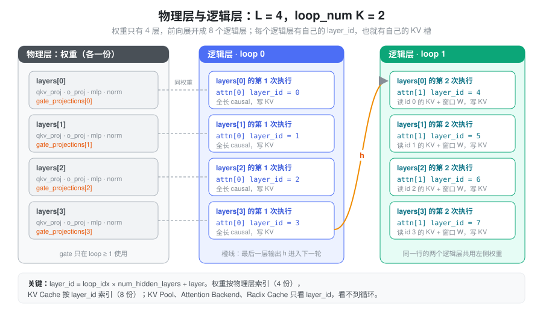
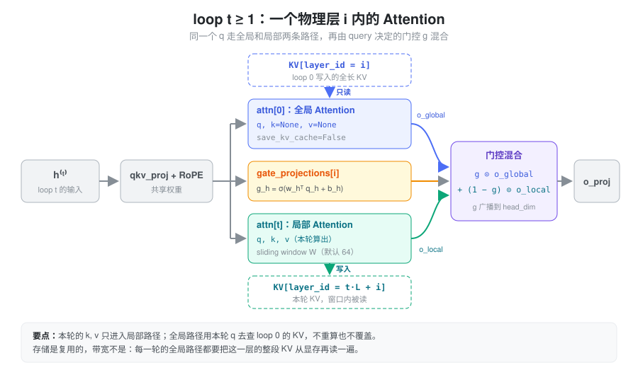
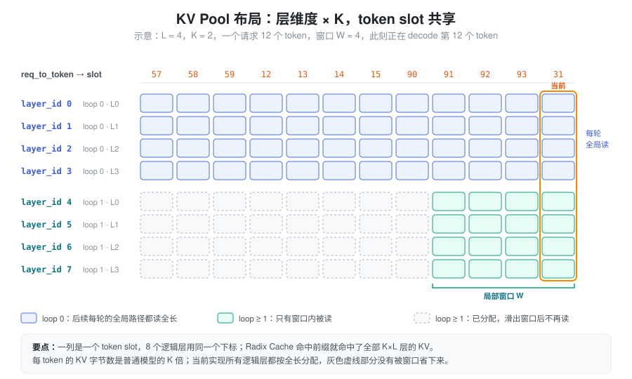

Loop Transformer 把同一组 Decoder Layer
重复执行多次：参数只有 L
层，前向却走了 K\times L
层。本文以 SGLang 中的 IQuest
LoopCoder（python/sglang/srt/models/iquest_loopcoder.py）为主线，说明推理引擎如何处理循环层的计算、权重存储和
KV Cache 存储；最后用
HRM-Text（python/sglang/srt/models/hrm_text.py）说明同一套做法如何推广到嵌套循环。
问题：想要更深，但不想要更多参数
模型的有效深度和参数量通常绑定在一起：多一层就多一份
Attention 和 MLP 权重。Loop Transformer 解开这个绑定，让
L 层权重循环 K 次（LoopCoder 的配置项是
loop_num，默认 2）：
h^{(t+1)} = F_{\theta}\big(h^{(t)}\big),\qquad t=0,\ldots,K-1
其中 F_\theta 是完整的 L 层堆叠，\theta 在每次循环中相同。它用计算换参数：FLOPs 约是同参数量普通模型的 K 倍，权重显存不变。
推理引擎里有一个默认假设：一个
layer_id 对应一份权重，也对应一份 KV
Cache。 Loop 打破了这个假设。同一层权重被执行 K 次，每次的输入 hidden state
不同，算出的 K/V 也不同。于是有三个问题：
| 问题 | 普通 Transformer | Loop Transformer |
|---|---|---|
| 怎么算 | 每层执行一次 | 每层执行 K 次，后续循环如何利用前一次的结果 |
| 权重存几份 | 每层一份 | 仍然每层一份，所有循环共享 |
| KV 存几份 | 每层一份 | 每次执行都产生新的 K/V，不能互相覆盖 |
抽象：物理层与逻辑层
把“层”拆成两个概念就能回答上面三个问题：
- 物理层：一份权重。LoopCoder 有 L
个物理层（
num_hidden_layers）。 - 逻辑层：物理层的一次执行，用 (\text{loop}, \text{layer}) 标识，共 K\times L 个。
权重按物理层索引，KV Cache 按逻辑层索引。逻辑层的编号就是展开后的位置：
\text{layer\_id} = \text{loop}\times L + \text{layer}

这个编号是整个实现的关键。SGLang 的 KV Pool、Attention
Backend 和 Radix Cache 只认
layer_id，不知道循环的存在。只要每个逻辑层拿到一个不重复的
layer_id，并且 KV Pool 按 K\times L
层分配，下游组件不需要任何改动就能工作。在模型里，权重放在物理层模块上，layer_id
放在不带权重的 RadixAttention
上，每个物理层持有 K
个这样的 Attention 对象，一个循环用一个。
Layer 计算：loop 在外，layer 在内
IQuestLoopCoderModel.forward
的执行顺序是两层循环，外层是 loop，内层是物理层：
for loop_idx in range(self.loop_num):
for layer_idx in range(self.start_layer, self.end_layer):
gate_proj = self.gate_projections[layer_idx] if loop_idx > 0 else None
hidden_states = layer(positions, hidden_states, forward_batch, loop_idx, gate_proj)外层是 loop，意味着整个 L 层堆叠先完整走一遍，最后一层的输出再作为下一轮第 0 层的输入。这个顺序还保证了一件事：进入 loop 1 时，loop 0 所有层的 K/V 已经写进 KV Pool，loop 1 可以直接读。
loop 0：普通的全局 Attention
第一轮和标准 Llama 层完全一样：QKV 投影、RoPE、全长 causal Attention、写 KV Cache、MLP。
loop ≥ 1：全局读 + 局部写，再用门控混合
后续循环的每个 Attention 用同一个 q^{(t)} 走两条路径：
o = g\odot \underbrace{\operatorname{Attn}\big(q^{(t)}, K^{(0)}, V^{(0)}\big)}_{\text{全局：读 loop 0 的 KV}} + (1-g)\odot \underbrace{\operatorname{Attn}_{W}\big(q^{(t)}, K^{(t)}, V^{(t)}\big)}_{\text{局部：本轮 KV，窗口 }W}

- 全局路径：调用
self.attn[0](q, None, None, forward_batch, save_kv_cache=False)。k、v传None，Backend 改从 KV Pool 里取 loop 0 这一层的 K/V；save_kv_cache=False保证不覆盖它们。本轮算出的 k^{(t)} 不参与全局路径。 - 局部路径：调用
self.attn[loop_idx](q, k, v, forward_batch)，这个RadixAttention的sliding_window_size是loop_window_size（默认 64），只看最近 W 个 token，并把本轮 K/V 写入自己的 KV 槽。 - 门控：
LoopGateProjection对每个 head 算一个标量 g_h=\sigma(w_h^\top q_h+b_h)，广播到该 head 的head_dim个通道。g 由 query 决定，所以每个 token、每个 head 都可以自己选择更依赖全局上下文还是局部细节。
可以这样理解：loop 0 负责从完整上下文建立表示，后续循环在这份全局 K/V 上反复“重读”，只为最近的窗口额外生成新的 K/V。
计算量
每个 token 的 QKV 投影、o_proj、MLP 都执行 K 次。Attention 部分，设上下文长度为 S，每个物理层在 Decode 时读取的 KV 行数为：
\underbrace{S}_{\text{loop 0}} + (K-1)\big(\underbrace{S}_{\text{全局}} + \underbrace{\min(S, W)}_{\text{局部}}\big) \approx K\cdot S
全局路径虽然复用了 loop 0 的 KV 存储，但每一轮都要把这份 KV 从 HBM 再读一遍。因此长上下文 Decode 的 KV 访存也约是普通模型的 K 倍，存储共享并不等于带宽共享。
Weight 存储：每个物理层只存一份
LoopCoder 只用
make_layers(config.num_hidden_layers, ...) 构造
L 个
LoopCoderDecoderLayer，没有任何按 loop
复制的权重。每层的组成：
| 组件 | 数量 | 是否随 loop 复制 | 说明 |
|---|---|---|---|
qkv_proj / o_proj /
mlp / 两个 RMSNorm |
L 份 | 否 | 所有循环共享，MLP 直接复用 LlamaMLP |
self_attn.attn（RadixAttention） |
K\times L 个 | 是，但没有参数 | 只携带 layer_id 和
sliding_window_size |
gate_projections[i]（LoopGateProjection） |
L 份 | 否 | loop 1 到 loop K-1 共用同一份 |
关键在第二行：“每个循环一个 Attention 对象”是必须的，因为 KV 槽要按逻辑层区分；但这个对象只是 KV 的地址，不是权重。权重和 KV 地址分离以后，循环只增加地址，不增加参数。
门控权重的形状是 [num_heads, head_dim]（加
[num_heads] 的 bias），用
ColumnParallelLinear(head_dim, num_heads) 按
head 维切到各 TP rank。forward 里先让每个 head 的 q_h 和本 rank 所有 head
的权重相乘，再用 torch.diagonal 取出 head h 对应的第 h 列。这样多算了
num_heads 倍，但这部分计算量远小于 QKV
投影，换来的是可以直接复用标准的并行线性层。
加载时 checkpoint 里的
gate_projections.{i}.weight /
.bias 被改名为
gate_projections.{i}.gate_proj.weight /
.bias。其余权重名与 Llama
相同，q/k/v_proj 合并成
qkv_proj，gate/up_proj 合并成
gate_up_proj。
KV Cache 存储：每个逻辑层一份 KV
为什么不能共用
同一个物理层在 loop 0 和 loop 1 的输入不同，所以 k^{(0)}\ne k^{(1)}。两者在后续 Decode 中都还会被读：loop 0 的 K/V 供所有后续循环的全局路径使用，loop t 的 K/V 供本轮局部路径使用。任何一份被覆盖，后面的 token 都会读到错误的历史。
布局：层维度乘以 K，token slot 共享
LoopCoderAttention.__init__
为每个循环创建一个
RadixAttention，layer_id = loop_idx * num_hidden_layers + layer_id。引擎侧有两处配合，把
KV Pool 的层数扩成 K\times
L：
configs/model_config.py：架构为IQuestLoopCoderForCausalLM时，num_attention_layers = num_hidden_layers * loop_num。model_executor/model_runner_components/layer_setup.py：loop_num > 1时num_effective_layers *= loop_num。pool_configurator.py用它计算每 token 的cell_size，kv_cache_configurator.py用它作为 KV Pool 的layer_num。

token 维度不变。req_to_token 给每个 token
分配一个 slot 下标，K\times
L 个逻辑层的 buffer
都用同一个下标。这带来两个直接结果：
- 容量按 K 倍缩小。每 token 的 KV 字节数是 2\times n_{kv}\times d_{head}\times \text{dtype}\times L\times K，同样的显存能放下的 token 数是普通模型的 1/K。
- 前缀复用不需要改动。Radix Cache 命中一个前缀，就同时命中了这些 token 在所有循环里的 KV。LoopCoder 的 Attention 都是 causal 的，一个 token 在每个逻辑层的 K/V 只依赖它之前的 token，所以 Chunked Prefill 和 Radix Cache 都可以照常开启。
只读访问
全局路径的
k=None, v=None, save_kv_cache=False 需要
Attention Backend 支持“只读、不写”。以 Triton Backend
为例，forward_extend 发现
k、v 为 None 时，用
forward_batch.out_cache_loc 从
layer_id 对应的 buffer 里取出本批 token
刚写入的 K/V，再与前缀一起计算；Decode 和 paged prefill
本来就从 KV Pool 读，只需跳过写入。FlashInfer 的 ragged
prefill 分支对 k is None
有单独处理（取该层的整块
buffer），使用这条路径时值得单独验证正确性。
窗口没有转化为显存节省
loop ≥ 1 的局部 Attention 只读最近 W 个 token，理论上每个物理层只需
S+(K-1)W 行 KV。但
IQuestLoopCoderForCausalLM 不在
is_hybrid_swa_model 的列表里，所有 K\times L
个逻辑层都按全长分配，实际占用 K\cdot S 行。W=64 时，loop ≥ 1 的 KV
几乎全部是“已分配、不再被读”的空间。如果要省这部分显存，方向是让
loop ≥ 1 的逻辑层走 SWA Pool（参考 SWA），代价是要处理 hybrid SWA
的层号映射。
一个约束：Pipeline Parallelism
layer_id 的公式用的是全局层号和全部层数
num_hidden_layers，而 KV Pool 按
layer_id - start_layer 寻址，大小为 (\text{end\_layer}-\text{start\_layer})\times
K。只有 start_layer = 0 且
end_layer = L（即 PP = 1）时两者一致；PP > 1
时 loop ≥ 1 的 layer_id 会超出本 stage 的 Pool
范围。
推广：HRM-Text 的嵌套循环
HRM-Text（Hierarchical Reasoning
Model）用同一套“物理层/逻辑层”做法处理更复杂的循环。它有两个
Transformer 堆叠：快的 L_module 和慢的
H_module，每个堆叠
num_layers_per_stack 层。前向是嵌套循环：每个 H
cycle 里先跑 L_cycles（记 L_c）次 L 堆叠，再跑一次 H
堆叠，共 H_cycles（记 H）个 H
cycle。每跑一次堆叠记为一个 step。
| 维度 | LoopCoder | HRM-Text |
|---|---|---|
| 物理层 | L 层，一个堆叠 | 两个堆叠，各 n 层 |
| 循环结构 | 单层循环，K 次 | 嵌套循环，共 H\times(L_c+1) 个 step |
| 逻辑层编号 | loop * L + layer |
step * n + layer，L 用 step h(L_c+1)+l，H 用 h(L_c+1)+L_c |
| Attention 对象 | nn.ModuleList，按 loop 下标 |
nn.ModuleDict，只为本堆叠用到的 step
创建 |
| KV 层数来源 | ModelConfig 和 layer_setup.py
里乘 loop_num |
HF config 的 __post_init__ 已把
num_hidden_layers 改成总 slot 数 |
| 后续循环如何读历史 | 门控混合 loop 0 全局 KV 与本轮窗口 KV | 每个 step 只读自己的 KV |
L 和 H 的 step 编号互不重叠，所以每个 (\text{step}, \text{layer}) 对应唯一的 KV 槽。
HRM-Text 多了一个约束：Prompt 部分用双向
Attention（AttentionType.DECODER_BIDIRECTIONAL）。在双向
Attention 下，一个 token 的 K/V 依赖它后面的
token，前缀不再能被别的请求复用。server_args.py
的 _handle_model_capability_adjustments
因此对这个模型强制使用 Triton Backend，并关闭 Radix
Cache、Chunked Prefill 和 CUDA Graph。LoopCoder 是纯 causal
的，没有这些限制。
小结
Loop Transformer
在推理引擎里的处理可以归结为一句话：权重按物理层存，KV
按逻辑层存。 把同一层的每次执行展开成一个独立的
layer_id，再把 KV Pool 的层数乘以循环次数，KV
Pool、Attention Backend 和 Radix Cache 就都能像处理一个
K\times L
层的普通模型一样工作；权重则只挂在 L
个物理层上，被所有循环共享。代价同样直接：计算量、KV 显存和
Decode 时的 KV 访存都约为同参数量普通模型的 K 倍。LoopCoder 用“后续循环读
loop 0 全局 KV、只为窗口内 token 写新
KV”降低了后续循环对长上下文的依赖，但在当前实现里，窗口还没有转化为显存节省。